Previewing a real star-studded show.
The dates are given in universal time, which is five hours ahead of eastern standard time, four hours ahead of eastern daylight time. (Thus, March 15 in universal time begins at 7:00 P.M. EST of March 14, and June 10 in universal time begins at 8:00 P.M. EDT of June 9.) Right: Sunlight, reaching the moon from the upper left in this illustration, illuminates our satellite and creates its phases: 1) new moon, 2) crescent, 3) first quarter, 4) gibbous and 5) full. The moon then wanes through the sequence in reverse. Far right: a calendar of moon phases.
SOME EXTRAORDINARY sights are in store this year for those who turn their eyes to the cosmos. A lengthy total lunar eclipse, dazzling meteor showers and displays of northern lights, and several spectacular conjunctions-or close pairings-of planets and other celestial objects are just a few of the events ahead. And for a bonus, even though we won't be able to actually see it, Voyager 2's final and closest flyby of a planet-Neptune-promises exciting photographic revelations.
On the afternoon of March 7, the first of two partial solar eclipses (the only solar eclipses this year) will be visible from most of the western half of the U.S., but only viewers in Alaska and Hawaii will get to see the whole show, during which 83% of the sun's diameter will be hidden. The second partial eclipse of the sun, on August 31, will be even less accessible-it'll be observable only from southern Africa, Madagascar and the Antarctic. It will also be the last truly partial eclipse of the sun for more than three years.
The two total lunar eclipses of 1989 hold more promise, although the first, on February 20, will be visible in the Western Hemisphere only from northwest North America, and only as it begins, just before dawn. The year's potentially spectacular second total lunar eclipse, however, should more than make up for its daylight-obscured predecessor. It'll be visible everywhere in the Western Hemisphere except northwest North America, and will reach totality during full darkness-on the night of August 16. Weather permitting, it'll be the first really proper view that people in the eastern U.S. have had of this kind of event since 1982. The August eclipse will also be, by far, the longest total lunar eclipse visible anywhere in the world since 1982: It'll last 96 minutes, only about 11 minutes short of the maximum possible.
The drama will open with the moon entering Earth's not-very-dark peripheral shadow, the penumbra, at 8:23 P.M. EDT. The penumbral shading probably won't be noticeable until close to 9 P.M. Then, at 9:21 P.M., the real excitement will begin when Earth's dark central shadow, the umbra, first touches the left edge of the moon. The umbra will creep slowly across the lunar surface until, at 10:20 P.M., the moon will be completely covered, initiating the "total" stage.
In a total eclipse, the moon's glow usually is reduced to about 1/10,000th of normal fullmoon brightness, but some sunlight does filter through Earth's atmosphere to reach the moon's surface. So don't expect Earth's satellite to be blacked out entirely. Even at mideclipse (at 11:08 P.M.), when the moon will be just below the center of Earth's umbra, the moon will not disappear nor will it even appear gray. The exact shading depends on the types and amount of atmospheric dust present around our planet at the time. Reddish orange is most likely, although some total lunars are indeed black and others bright orange. Each is different, so be sure to see this one. You won't get another look at a total lunar eclipse until 1992!
The eclipse will pass totality at 11:56 P.M. The last edge of the umbra will slide off the moon at 12:56 A.M. EDT, and then the penumbra will slip away at 1:53 A.M.
Astronomers were amazed last year by a tremendous increase in solar activity. Among other developments, there were several cases of naked-eye sunspot groups, including one of the largest ever observed (early last July). Solar activity, which includes flares and sunspots, usually builds to a maximum about once every 11 years. Astronomers weren't expecting the next peak until 1990 or later, but now it seems certain that the maximum will occur in 1989, and that it will be among the strongest peri ods of solar activity in recorded history. As one result, 1989 also promises to be a prime year to watch the north sky late at night-especially when large sunspot groups have just passed the sun's central meridian-in hopes of seeing the northern lights, or aurora borealis. Locations above 40° north latitude are best for viewing the phenomenon, but when great auroral storms occur, even folks in Florida and Texas can see these majestic, shifting patterns of often-colorful light.
Meteors are the shooting stars or falling stars we see when random bits of rock and iron from outer space enter our atmosphere at such high speeds that they burn up from friction with air molecules. Meteor showers, on the other hand, are predictable on an annual basis. They occur when increased numbers of meteors streak from certain points in the heavens on certain nights each year. These are the nights when our planet passes through concentrations of meteoric material-cometary debris, actuall--that exist at specific places along Earth's orbit. Meteor observers can see fireballs (meteors even brighter than Venus), bolides (exploding meteors), meteor trains (the lingering trails of some meteors), and "ordinary" meteors of all colors. To see the maximum number of meteors in a shower, choose a place well away from city lights and hope for clear, moonless skies.
This year, moonlight will ruin views of four of the six major showers that were visible last year: namely, April's Lyrids October's Orionids, mid-November's Leonids and mid - December's Geminids. To compensate, though, you'll get a look at several showers that weren't visible in 1988, plus repeat performances of the Taurids and Perseids.
Look for as many as a dozen Quadrantid meteors an hour coming from the northeast in the last few hours before dawn on January 4. The Eta Aquarid meteors-debris from Halley's comet-will fly out of the southeast at rates of 10 or more per hour just before morning twilight on May 3 and 4. The Delta Aquarids are best after midnight on evenings at the very end of July and, the start of Aug ust. They and their lesser companions, the Capricornids, are often golden, and come from the south in numbers as great as several dozen per hour.
The best time for viewing the often-spectacular Perseids shower will be after late moonsets in the predawn hours of August 12 and 13. On those mornings, the swift meteors may rain out of the heavens at a rate of up to one a minute. Try not to miss them! Also, the year's last major visible shower, the Taurids, should yield five or more slow, bright meteors an hour out of the southeast during the first week of November.
In 1988, the seasons started earlier than they had since 1896 and 1897, and this year they'll not be far behind-only about six hours later than last year.
Vernal equinox (the onset of spring) will occur at 10:29 A.M. EST on March 20; summer solstice will take place at 5:54 A.M. EDT on June 21; autumn will begin at 9:21 P.M. EDT on September 22; winter solstice will start at 4:23 P.M. EST on December 21.
One star indicates the event is of special interest; two indicate even higher interest.
1 Earth at perihelion at 5 P.M. EST.
4**Quadrantid meteors good just before dawn, despite some moonlight.
8* Good chance to see Mercury low in west at dusk around this date.
9* Moon near Mercury after sunset.
12* Venus-Uranus conjunction (needs telescope; hard to see).
16**Venus-Saturn conjunction.
19* Venus-Neptune conjunction.
23**Moon hides bright star Regulus (roughly 9:20 P.M. EST) as seen from most of eastern U.S.
6* Very thin crescent moon may be visible low at dusk.
20* Total eclipse of the moon visible late at night in Alaska and Hawaii.
3* First of year's three Saturn-Neptune conjunctions (needs telescope).
7* Partial eclipse of the sun visible from much of western U.S. at day's end, best from Alaska and Hawaii.
11**Mars-Jupiter conjunction (with moon nearby).
20**Spring equinox at 10:29 A.M. EST.
26* Earliest Easter until March 23, 2008.
2 Set clocks ahead for daylight savings time.
4 Mercury and Venus at superior conjunction with sun on same day.
6* Good chance to see very thin crescent moon low in west at dusk.
15* Moon hides Regulus as seen from some of southeast U.S.-but in daytime (roughly 5:30 P.M. EDT), so telescope needed.
21 Lyrid meteors ruined by full moon.
1**Around this date, best chance of year to see Mercury after sunset-low in west.
1 * Pluto at opposition, best time to try seeing it with telescope in its best year (see September 12).
4**Eta Aquarid meteors good just before dawn around this date.
16 Mercury-Venus conjunction (but Mercury probably too dim to see).
22**Venus-Jupiter conjunction (low at dusk, but planets are bright).
Meteor observers can see fireballs (meteors brighter than Venus), bolides (exploding meteors) and "ordinary" meteors of all colors.
21**Summer solstice at 5:54 A.M. EDT.
24* Second of year's three Saturn-Neptune conjunctions (needs telescope).
24* Uranus at opposition.
26 Asteroid Vesta at opposition (visible to naked eye this month-see advanced astronomy magazine for details).
1 * Uranus-Vesta conjunction.
2**Saturn at opposition.
2* Neptune at opposition.
2**Mercury-Jupiter conjunction.
3**Saturn passes in front of star 28 Sagittarii-extremely rare, and spectacular in telescopes!
4 Earth at aphelion at 8 A.M. EDT.
4**Moon near Venus after sunset.
11**Venus-Mars conjunction.
14* Uranus very close to slightly brighter star.
23* Venus-Regulus conjunction.
30**Delta Aquarid meteors good after midnights around this date.
2**Moon-Mercury Mars-Regulus grouping!
5**Mercury-Mars conjunction-closest visible conjunction of planets for 31 years (low in west at dusk, binoculars help).
12**Perseid meteors at their best this night or next, after very late moonset.
15* Venus-Beta Virginis conjunction.
16**Total eclipse of the moon, longest in six years, visible for all Americas except northwest North America.
19* Vesta has close conjunction with fairly bright star (needs telescope).
31 Partial eclipse of the sun, not visible from U.S.
1 Uranus farthest south in 84 years.
3* Venus-Spica conjunction.
12**Pluto at perihelion-closest to the sun in almost 500 years!
15**Harvest moon (full moon closest to autumn equinox; some say full moon after autumn equinox).
22**Autumn equinox at 9:21 P.M. EDT.
2 Saturn farthest south in 29 1/2 years.
3**Venus near the moon after sunset.
10**Around this date, best chance of year to see Mercury at dawn-low in east.
10* Venus-Delta Scorpii conjunction.
1 4* Closest moon and strongest astronomical tide of the year.
16* Venus-Antares conjunction.
21 Orionid meteors spoiled by bright moonlight.
28 Farthest moon of the year.
29 Set clocks back for standard time.
1**Taurid meteors good in middle of night during next week.
2**Venus near moon after sunset.
8* Venus-Uranus conjunction (needs telescope).
8**Venus at greatest elongation from sun, high in evening sky.
12* Last of three SaturnNeptune conjunctions this year (needs telescope).
15* Venus-Neptune conjunction (needs telescope).
15**Venus-Saturn conjunction.
16 Leonid meteors spoiled by bright moonlight.
26* Mars-Alpha 2 Librae conjunction (very low in morning twilight, needs telescope).
14**Venus at greatest brilliancy in evening sky.
14 Geminid meteors ruined by bright moonlight.
16* Mercury-Saturn conjunction (low in west at dusk, may need telescope).
21**Winter equinox at 4:23 P.M. EDT.
23* Fairly good chance to see Mercury at dusk, low in west, around this date.
27**Jupiter at opposition.
30* Mars-Antares conjunction (compare red planet with red star).
Mercury never moves far from the sun in either space or our sky, making it the most difficult to see of the bright planets. But this year Mercury reaches greatest elongation (largest apparent separation) from the sun no less than seven times. On some of those occasions, U.S. viewers will get a chance to see the planet either about 60 to 30 minutes before sunrise or about 30 to 60 minutes after sunset. Mercury's best showing at dusk, low in the west, will occur for a few weeks around May 1; it'll be at its morning-twilight best during the weeks around October 10. Mercury has some rather interesting conjunctions (close meetings) this year, including one with Jupiter before dawn on July 2 and with a bright star and Saturn after sunset in midDecember. But its most remarkable conjunction will be an ultraclose encounter with Mars on August 5; I'll describe that event in the section on Mars.
Venus will spend much of 1989 on the far side of the sun from us. At the beginning of the year, it will be low in the east as morning twilight strengthens, and will pass extremely close to three planets-Uranus, Saturn and Neptune-in succession (of these, however, only Saturn, which Venus will go by on January 16, will be plainly visible to the naked eye). Venus will reach superior conjunction (position opposite the sun from Earth) on April 4-interestingly, the same day that Mercury also reaches superior conjunction. After this, Venus will play its role as the evening star, getting gradually higher in the sky throughout the summer and early fall. It'll form a close but low conjunction with Jupiter on May 22, and in July will pass near Mars and the star Regulus. Finally, on November 8, the planet will reach its greatest elongation from the sun. At this time viewers with telescopes will get a view of the planet in a half-moon-like phase. The final month of 1989 will find Venus blazing brilliantly in the evening sky, looking ever larger in telescopes, and setting dramatically sooner after the sun each night. Don't miss the fine moon-Venus pairings after sunset on July 4, October 3 and November 2.
Earth seems holiday-oriented this year, at least in terms of its orbit. Our home world will reach perihelion (the closest point in its orbit to the sun) on New Year's Day, 1989, and will be at aphelion (farthest from the sun) on the Fourth of July.
Mars was as close to Earth last autumn as it has been in a generation, but during the first months of 1989 it will be left far behind by our own speedier planet. In January, Mars will cross constellations from Pisces to Aries and will shine as bright as many of the brightest winter stars. By March, it will have dimmed but will still form a dramatic conjunction with Jupiter in the west after nightfall on the 11th. The red planet will also pair up with Venus low in the west on July 11 and 12.
The real high point for Mars, though, will come after sunset on August 5, when it will be a participant in the closest fully visible conjunction of planets taking place before the year 2020. From our vantage point on Earth, the distance between Mars and Mercury will appear to be less than 1/30th of the moon's diameter. The event will be low enough in twilight to make binoculars and very clear skies desirable for viewing (the naked eye will perceive the two planets as a single point of light). To add icing to this cosmic cake, the star Regulus will be only about a degree away. In fact, three nights earlier, on August 2, Mars, Mercury and Regulus will be joined by the crescent moon, forming a marvelously tight quadruple gathering.
Jupiter will be very bright in Taurus in the south on January nights. Gradually, this slow giant will be overtaken by much dimmer Mars, leading to a fine March 11 conjunction. Jupiter will have faded by May but will still be bright enough to be seen meeting dramatically with Venus at dusk on the 22nd. Shortly afterward it will pass behind the sun and out of view until late June, when it will appear in the dawn sky in time-a few days later, on July 2-to give us a glimpse of the planet outshining a bright Mercury low in the northeast.
In late July, Jupiter will pass from Taurus into Gemini, where it will brighten alone, rising ever earlier in the night, until it reaches opposition on December 27. Opposition occurs when an outer planet reaches the point in its orbit where it is on the opposite side of Earth from the sun. When this happens, the planet rises at sunset and is visible all night long until it sets at sunrise. As a result, this is also the time when the planet appears bright est and biggest in telescopes. Even though it's roughly half a billion miles away, Jupiter-our largest planet-usually reveals more detail than any other planet when seen through a telescope (or even good binoculars). So the December 27 event should provide excellent viewing.
Saturn will be low in the dawn sky when Venus passes near it on January 16, and over the next six months will rise ever earlier-in the middle of the night by April, at the end of evening twilight by June. Finally, on July 2, it will reach opposition, rising at sunset and shining brilliantly throughout the evening. The planet's famous rings will still be tilted, as they were last year, about 27° downward from edge-on, revealing their broad, reflective upper side. But Saturn will also reach the most southerly point in its 29 1/2-year-long orbit in 1989, making it appear for U.S. observers quite low in the southern sky in the constellation Sagittarius.
Advanced viewers with telescopes will want to pay special attention to Saturn in 1989, to witness a series of rare sights on March 3, June 24 and November 12, when Saturn will be in conjunction with dim Neptune. In fact, the two will be relatively near each other (and near several naked-eye stars in Sagittarius) all year. From July through December, Saturn will be up and ready to view as night falls.
To make finding Neptune easier, consult a detailed chart from an astronomy magazine (such as Sky and Telescope or Astronomy) or a star almanac (such as Guy Ottewell's Astronomical Calendar, available for $12 postpaid from Astronomical Workshop, Furman University, Greenville, SC 29613). One other special sight in store for as tronomy enthusiasts with telescopes will occur on the night of July 3, when Saturn makes an exceedingly rare passage centrally in front of the naked-eye star 28 Sagittarii.
Uranus will be in Sagittarius in 1989, only a few degrees west (left) of Saturn and Neptune. On January 12, a good, powerful telescope might reveal its conjunction with Venus in the dawn sky; look for a dim, green speck close to a slightly brighter star and just half a degree south of Venus. By summer Uranus will be rising at sunset and shining its brightest-bright enough to glimpse with the naked eye in excellent country skies if you know exactly where to look.
This year, however, naked-eye observers wishing to spot Uranus around the time of its opposition (June 24) will have a problem: The aforementioned slightly brighter star will be too close to Uranus for the two to be separated without optical aid. The two objects will form an especially close pair on July 14 and 15. Uranus will remain visible in the evening sky until November, when it will become obscured by twilight.
Pluto in 1989 will arrive at what for sky watchers is the most favorable position of its entire 248.5-year-long orbit: perihelion, the planet's closest point in space to the sun. It'll still be no closer than 2,766,000,000 miles, but that's nearer to the sun (and to Earth) than Neptune-something that can be said for only about 20 years (in this case, from 1979 to 1999) out of each of Pluto's near-quarter-of-a-millennium cycles. Besides, when Pluto was last at aphelion (farthest out), in 1866, it was 4,566,000,000 miles out, a distance it takes light over six and a half years to traverse.
Unfortunately, even this year, when it's at its brightest, the planet will be hard to see. Pluto is much smaller than Neptune and much dimmer. A telescope with a six- to 10-inch diameter main mirror, or lens, is necessary-as are extremely detailed star charts.
Neptune should this August become the eighth of nine planets in our solar system to be photographed and studied by a passing spacecraft (only Pluto will remain unvisited). Voyager 2, launched over a decade ago, has already given us spectacular photographic views of Jupiter, Saturn and Uranus, and now will make its closest pass of all by Neptune-the last world the spacecraft will visit before heading on its way out of our solar system.
For earthbound viewers, observations of Neptune call for a small telescope, or at least very good binoculars, and the help of charts from an advanced astronomy almanac such as the Astronomical Calendar. Neptune will be at opposition on July 2, just 10 hours after Saturn.
|
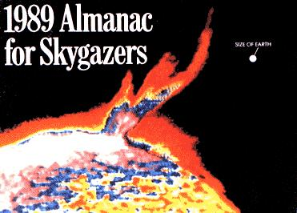 Voyager 2 will photograph the planet Neptune this August. |
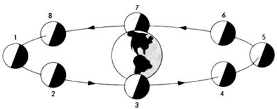 |
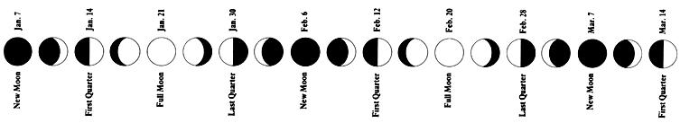 |
|
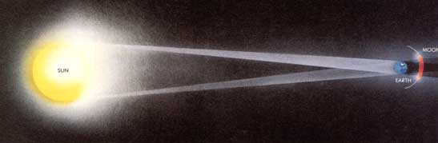 |
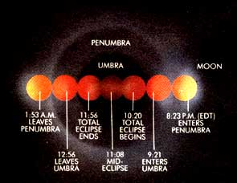 |
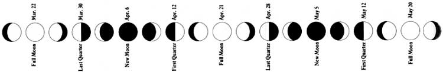 |
|
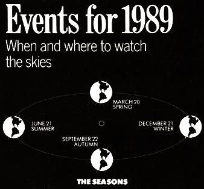 |
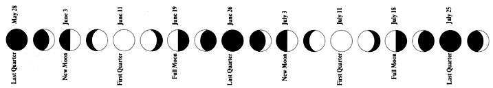 |
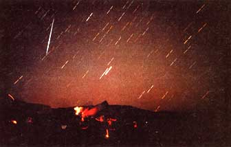 |
|
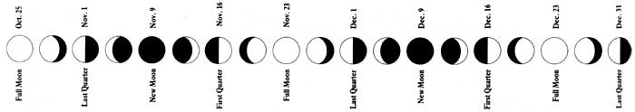 |
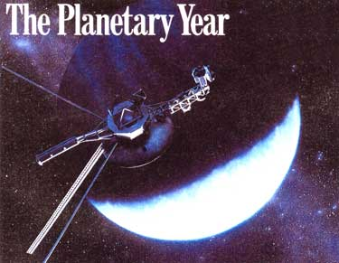 |
|